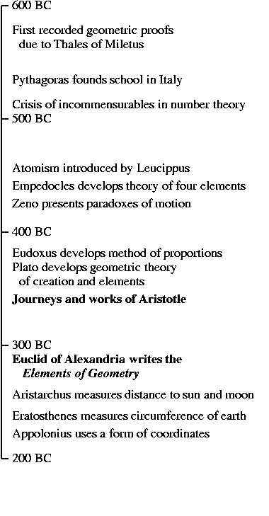

Timeline
Ancient Detail Timeline
Modern Detail Timeline



Timeline |
Ancient Detail Timeline |
Modern Detail Timeline |
|
 |
|
The year Plato died, his most versatile pupil left the prestigious Academy in cosmopolitan Athens, and embarked upon a 12 year scientific field-trip around the Aegean sea, studying a great variety of species and classifying his discoveries as best he could into a regular, coherent structure. His name was Aristotle. Two generations later, a lecturer at the new University in Alexandria wrote a textbook called the Elements of Geometry, presenting the most important mathematical results known to date in a unified form, deduced systematically from a small collection of basic assumptions. His name was Euclid.
These towering figures, who came to personify the studies of meaning and of geometry in Western tradition, would have been fascinated by the spectacular applications of their methods in the internet age, with its flowering of geometric representations for information of all kinds. Many of these structures are very apparent in our daily lives, from the maps of public transportation networks to the graphical interfaces of computer systems and browsers which enable users to click on files and documents like points on a map, linking them to vast networks of information. These perceptible examples are the tip of an iceberg. Behind the scenes, many search engines represent queries and documents as points in geometric spaces and trawl their way through the internet using the patterns of hyperlinks to measure the reliability of different information sources. Knowledge bases represent linguistic concepts in hierarchical tree-structures, which enable logical inferences to combine different premises and deduce valid and relevant conclusions.
Many of the geometric techniques applied in recent years to information technology are centuries old, and have been developed through contact with mechanics, electronics, acoustics, biology, relativity and quantum mechanics. From ancient and mystical correspondences between shapes, numbers, musical notes and physical elements, to the revolutions of relativity and quantum theory in recent times, this book tells the story of the geometric spaces which provide the mathematical stage on which the scientific action takes place, and how many of their principles are derived straight from the ancient works of Euclid and Aristotle.
Originating from many branches of science, all of these spaces are used to represent words and their meanings, and the book presents many varied examples of these uses. Most of these are taken from models built automatically from free text, using software and models developed by the Infomap (Information Mapping) project, a team at Stanford University's Center for the Study of Language and Information which I had the privilege of leading for three years, from 2001 to 2004. Many of these models can be now be built and explored using the open source Semantic Vectors package — seeing is believing.
This story combines old and new. Ongoing progress in information management, vital to the needs of business, research, governmental and international organizations, is described right alongside the geometric spaces underlying the whole process, which have ancient roots. Rather than presenting the formal ideas as disembodied mathematical definitions and equations (which can be very dismaying to most human readers), I have tried to describe the circumstances and motivations which led to the original development of the geometric models we use for gathering information from text today. It is hoped that in so doing, readers who are new to natural language processing but have a grounding in other fields such as biology, music, physics, artificial intelligence, logic and cognitive science, will find some of the material strikingly familiar and may wonder if our methods have simply been stolen wholesale from other disciplines. In many cases this is just what has happened --- mathematics has always seen the virtue in recycling.
As well as being a monograph of recent research and a historical perspective thereon, there is an important theme to this book. The coordinate geometry of Rene Descartes (1596--1650) revolutionized mathematics, bringing geometry and algebra together into a new combined structure. This catalyzed the development of scientific advances as varied and important as mechanics, gravitation, fluid dynamics, and electromagnetism, and provided the background within which Boole, Hamilton and Grassmann developed their own conceptual models in the 1840s and 1850s, which are used in search engines today. By the 1930s, mathematicians and quantum theorists began to recognize that geometry and logic could be similarly combined, within the common framework of lattice theory.
Last year, I programmed some of these logical operations into a geometric search engine and published the results of these experiments, which were both promising and thought provoking. The behaviour of these abstract models leads to important conceptual questions, some of which also lie at the heart of one of the greatest unsolved problems in physics, the discrepancy between classical physics and the quantum theory. As the history of science unfolds, the eventual union of geometry and logic could be as great a catalyst as the union of geometry and algebra wrought by Descartes over 350 years ago, describing the states of physical systems, states of information, and states of mind, providing frameworks for technological advances yet unthought of.
Geometry is a branch of mathematics, and you may firmly believe that there's no way you could read a book about mathematics and both understand the material and enjoy the experience. This is wrong, and the way mathematics is usually presented is very much to blame. If you have an eagerness for science and an inquisitive mind, you will understand and enjoy as much of this book as you care to read, and I hope you'll enjoy the pictures even in the sections you skip over.
As well as those with general scientific interests, this book may be useful to active researchers in many fields as a handbook of geometric models with worked examples (and some free software). Most of the examples are from natural language processing, but many of the models have been used in a variety other fields such as linguistics, computer science, artificial intelligence, sociology, psychology and cognitive science, where accurately modelling and exploring empirical data is an increasingly important activity. On the other hand, mathematicians who have been taught much of the theory behind geometric spaces might be delighted to find out about how these spaces can be used so elegantly and efficiently for solving problems in information engineering, and ideally they may even be attracted to a whole new career where their skills are relevant in ways they had not previously realized.
At its most specific, the book can be used to teach a graduate course in language and informatics: some parts have been successfully used already in a new course on Computational Word Learning at Stanford, which attracted students from many academic departments and researchers from local industry. Exercises (in the form of mathematical problems, programming challenges and written essays) can be provided for students at many different levels, and are available from the author on request.
However, my dearest (and for a mathematical book, most ambitious) desire has been that Geometry and Meaning should be enjoyable. Many people with excellent backgrounds in the sciences or humanities still feel that computers are a modern mystery which has left them behind. Many with a wonderful grasp of natural geometry were so firmly put off mathematics in high school that they have never been able to enjoy its beauty. If you belong to either of these categories, this book may remove some of these unnatural barriers by making the journey a pleasure.
The journey metaphor is useful: in a sense this book is a tourist guide. It describes geometric spaces containing linguistic information, and the tools we have developed to build and navigate our way around these spaces automatically, making maps as we go along. Along the way we'll encounter idioms shaped like a pair of kitchen scales, the great Tree of Life and some of its linguistic counterparts, ambiguous words which behave like semantic wormholes, and a crystalline lattice of names of horses with the same shape as the lattice derived from Aristotle's ancient theory describing the way the universe is made up of earth, air, fire and water. If you want to take a holiday in concept space from the tranquility of your favourite armchair, then make yourself comfortable and the tour will begin.
| Up to Geometry and Meaning | | | Back to Foreword | | | On to Chapter 1 |